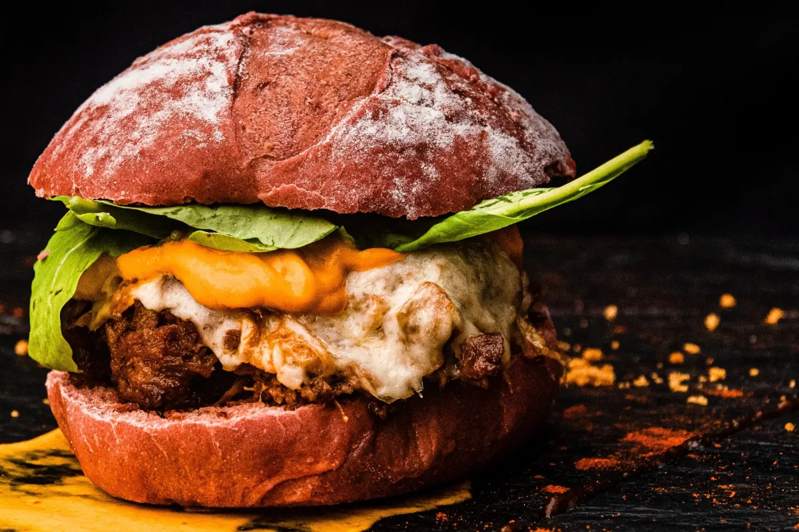
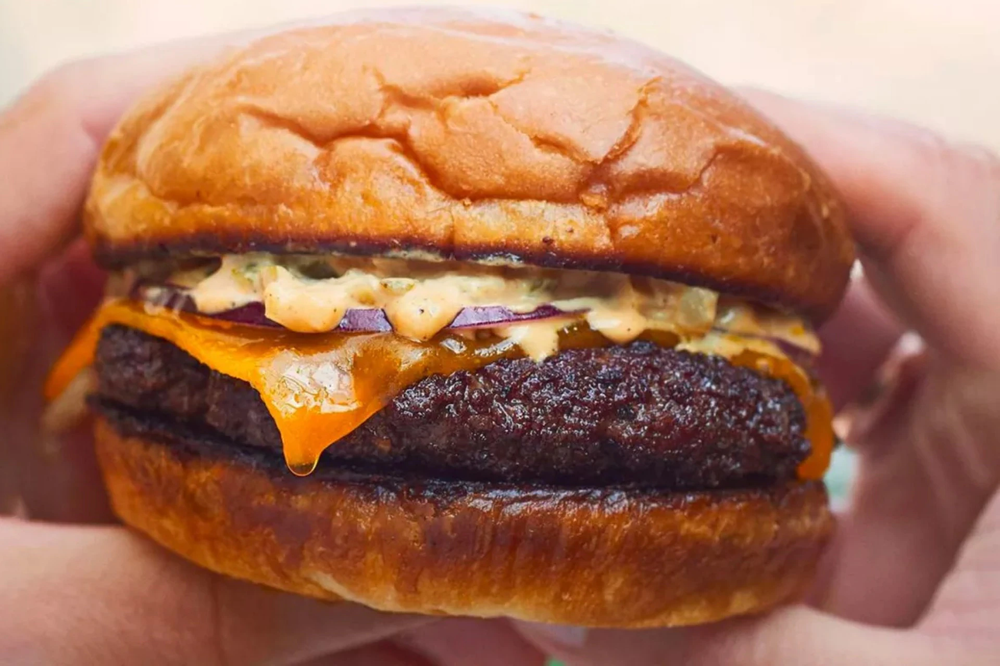
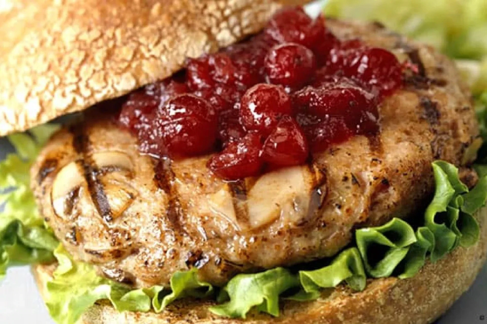
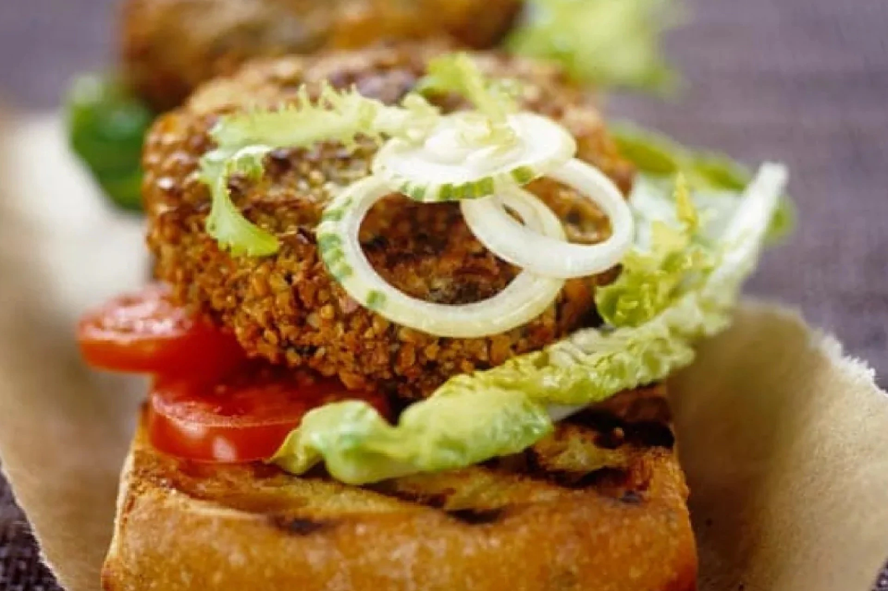
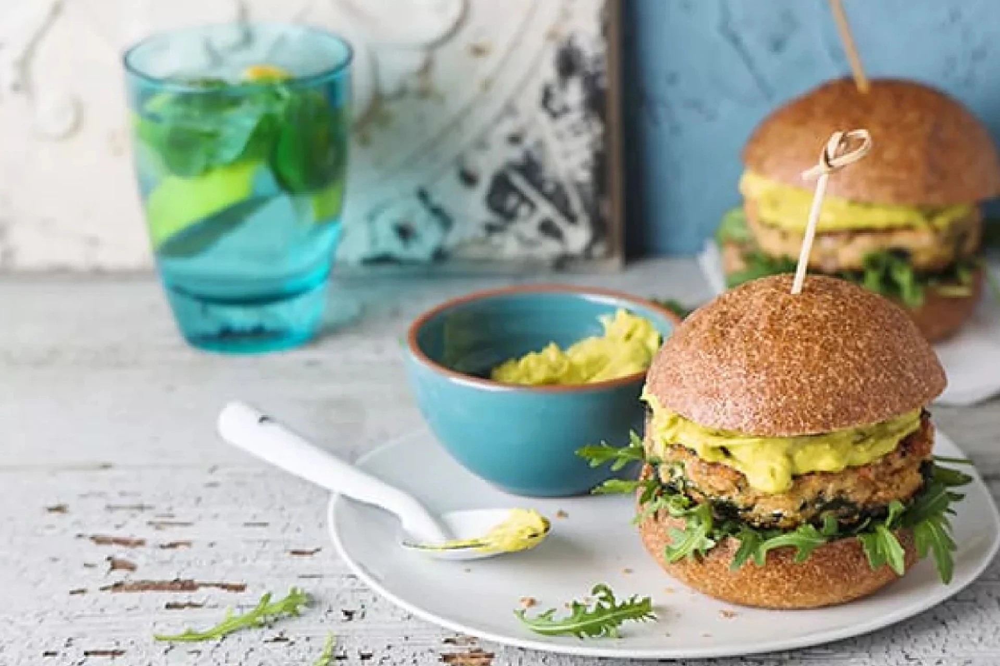
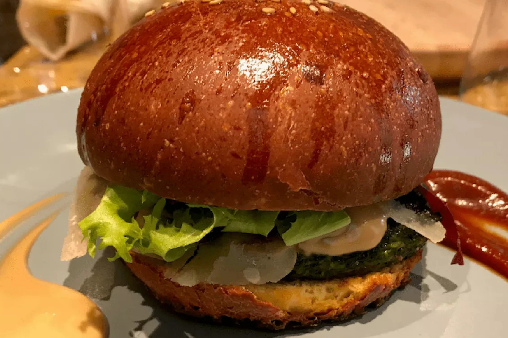

Eight Diffrent Types Of Burgers To Make
The burger is one of the most satisfying yet simple foods, an icon of modern society. Empires have been built on this beef patty sandwich. Whether you like a gourmet burger of Angus beef on a brioche bun, a veggie burger, or something spicier with hot sauce, there are so many ways to create the burger you want. Some have perfected the art of the gourmet burger, however, and many burger joints have become famous for the way they do things. Here are some of the best-known burgers in the world.
Hamburger
The original and for many still the best. So good, in fact, that René Redzepi, of Copenhagen's Noma, the number one restaurant on the World's 50 Best Restaurants list, has committed fully to his own pandemic era-inspired burger joint Popl. The history of the hamburger is contested, and some say it goes back to ancient Rome, but one theory about the invention of the modern hamburger is that it can be ascribed to Charlie Nagreen, later known as 'Hamburger Charlie', who in 1885 squashed a beef meatball between slices of bread so his customers could walk around eating.
Turkey Burger
Probably inspired by one of the greatest sandwiches of all time - the leftover turkey sandwich - this is a burger that might not be everyone's first choice, but should definitely be one all burger lovers get to know. Turkey is a delicious, tasty and dry meat that is packed full of flavour, making it a perfect alternative to red meat for a burger patty. Try this recipe and never look back.
Portobello mushroom burger
Substituting the meat patty for a delicious, meaty, umami-packed grilled portobello mushroom will give you a vegan burger that will satisfy even the hungriest carnivore. Add mango and beansprouts for a fresh contrast of texture and flavour.
Elk burger

Lean, delicious and free-range, what's not to like? Elk meat, recently rising in popularity because of a certain bow-hunting podcast celebrity, is something Canadians and Scandinavians have been eating for millennia. It makes a mean burger too.
Veggie burger
Once the lonely refuge of the only vegetarian in your group, the veggie burger now threatens to knock the beef burger off its perch. So much so, that even legendary French chef Alain Ducasse, who once slammed fake meat burgers, has now opened his own vegan burger joint in Paris. Try this veggie burger recipe to make your own at home.
Wild Salmon burger
Of all fish, salmon makes probably the best fish patty for a burger. The main thing to consider is the source of your salmon and in general, farmed salmon should be avoided, so if you can, get your hands on wild salmon and grind it down for a salmon burger. The addition of dill, capers, mayo and ginger takes this burger the highest level. This recipe for salmon burgers adds quinoa for texture.
Bean burger
The longtime veggie burger staple, the bean burger can be explored once more by using different pulses for different flavours in your bean burger patty. Try this ultimate chickpea burger recipe, which relies on middle-eastern falafel recipes, for a satisfying vegetarian burger.
Cheeseburger
The addition of cheese transforms a burger... into a cheeseburger. But all joking aside, it just makes sense to add a layer of cheese to your burger, whether it's blue cheese or cheddar, you can't go wrong. Try this recipe for the ultimate cheeseburger, which calls for umami-packed Parmesan cheese.